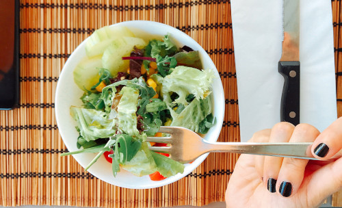

05 MAR 21
6

10 benefícios de uma alimentação saudável para a vida
Motivos não faltam para nos alimentarmos bem; afinal, todo nós sabemos os inúmeros
benefícios que uma alimentação saudável rica em frutas, legumes, vegetais e
integrais tem para nossa saúde.